環境構築
環境構築に必要なもの

1.パソコン

プログラミングの環境を構築するためには、開発環境に必要なツールをインストールするパソコンが必要です。
HTML、CSS、JavaScriptでは、用意するパソコンはノートパソコンでもデスクトップパソコンでもかまいません。
また、WindowsやMacなど、OSの種類も問いません。
まずは手元にあるパソコンで始めてみて、こだわりが出てきてから買い替えを検討してもけっして遅くはないでしょう。
作業を効率よく進めるため、マウスやキーボード、ディスプレイなど、使いやすいと感じるものを合わせてそろえておくとよいでしょう。
2.コーディングツール
パソコンの準備ができたら、続いてはコーディングツールを準備します。
コーディングとは、プログラミングの中心となる、ソースコードを書く作業のことです。コーディングには、「テキストエディタ」と呼ばれるソフトウェアが必要になります。
基本的なホームページのコーディングであれば、Windowsの「メモ帳」や、Macの「テキストエディット」など、OSに標準で付属しているテキストエディタを利用しても問題ありません。
しかし、効率よく学習を進めるためには、プログラミング向けの機能を持ったテキストエディタを選ぶことをおすすめします。
インターネット上には動作が軽量なものや、プログラミングをサポートしてくれるプラグインが豊富なものなど、さまざまなメリットを持ったテキストエディタがたくさん公開されています。
しかも、それらの多くは、無料で使用することができます。
このサイトでは無料で使用できておすすめなVisual Studio Code(vscode)について記載していきます。

テキストエディタのインストール

1.Visual Studio Codeのサイトにアクセス
Visual Studio CodeはMicrosoftが開発したWindows、Linux、macOS用の無料で使えるテキストエディタです。
コード補完やリファクタリング、デバッグやGitなどカスタマイズ性の高いエディタとなっています。
ここでは、Visual Studio Codeのインストール方法を紹介します。
Visual Studio Code: https://azure.microsoft.com/ja-jp/products/visual-studio-code/
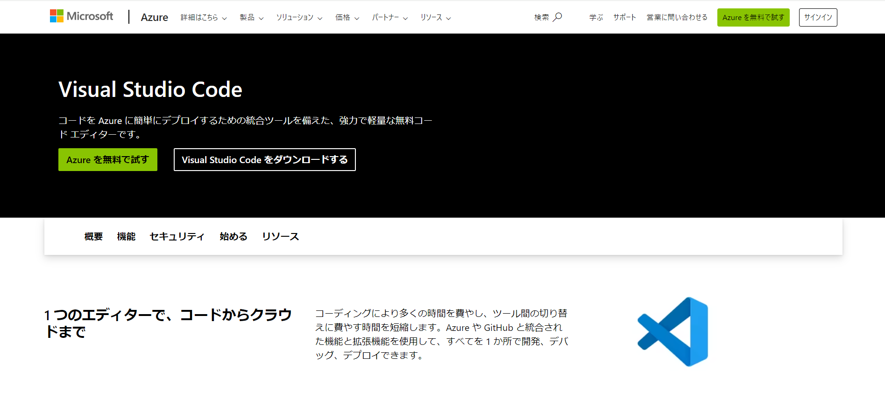ページ中央の「Visual Studio Codeをダウンロードする」ボタンをクリックすると、ダウンロード画面に遷移します。
2.Visual Studio Codeのダウンロード
サイトからVisual Studio Codeを入手します。2024年6月の最新バージョンは「1.90」となっています。
ページ中央にある3つのダウンロードボタンから、左側「Windows」ロゴの下のダウンロードボタンをクリックすると、ダウンロードが開始されます。
ページが切り替わってもダウンロードが開始されない場合には、ページ上部の「direct download link」からダウンロードしてください。
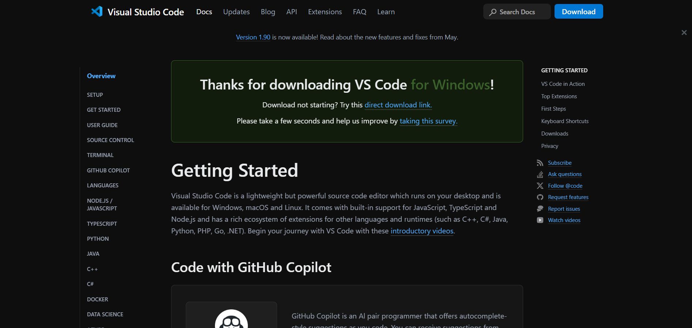3.Visual Studio Codeのインストール
下図のように、ダウンロードしたインストローラーを開きましょう。すると、インストールが開始されます。
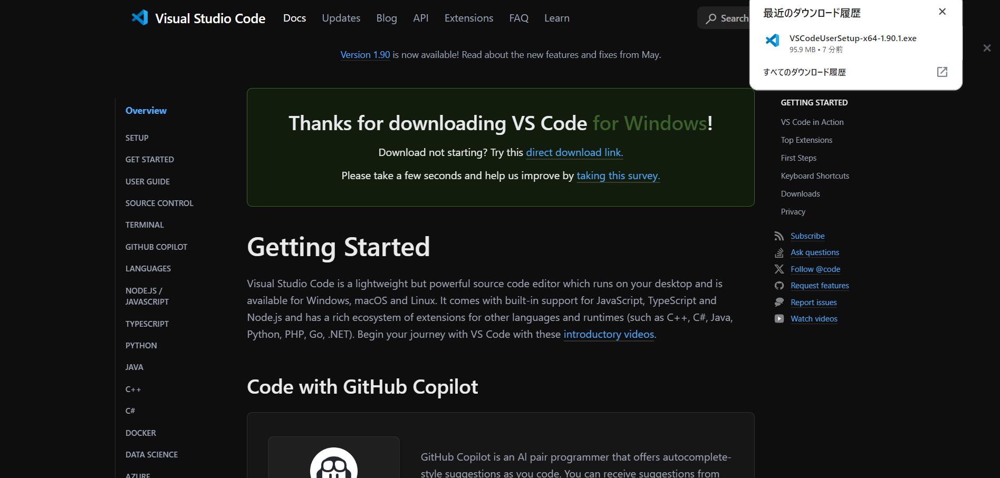次に、使用許諾契約書の同意について聞かれます
よく読んだ後「同意する」を選択し、「次へ」をクリックしてください。
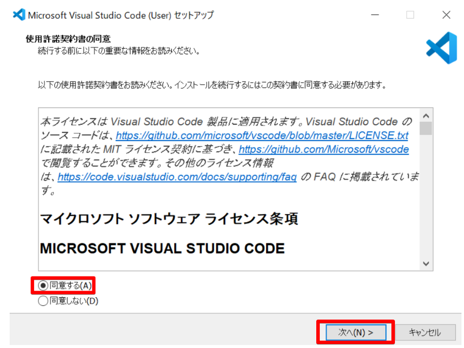次に、VSCode のインストール先のフォルダを指定します。
特に、指定する必要がなければ、そのまま「次へ」を押してください。
別のフォルダに変更したい場合は「参照」をクリックして、変更しましょう。
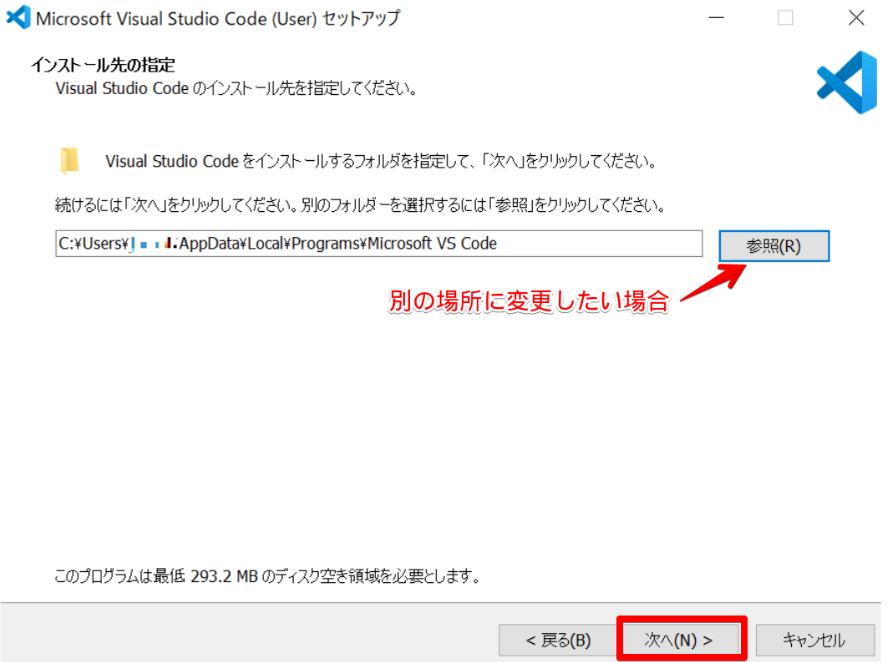続いて、そのまま「次へ」を押してください。
名前の変更やスタートメニューを作成しない場合は、下図を参考にしましょう。
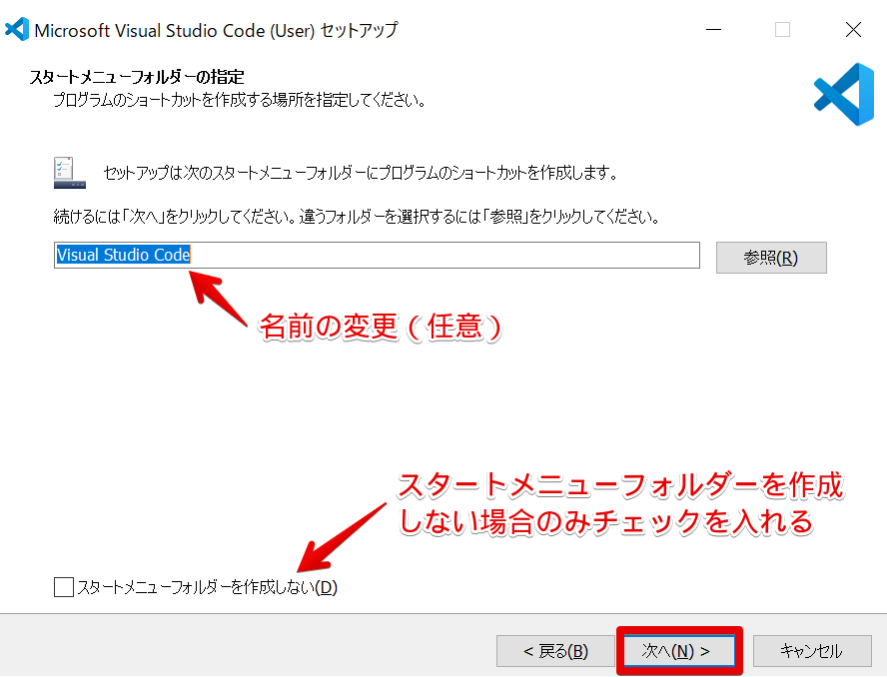次は、追加の設定の画面です。
デフォルトでは「PATH への追加」のみチェックが入っています。このままでも大丈夫ですが、下図のようにチェックを入れると、vscode の使い勝手が良くなります。
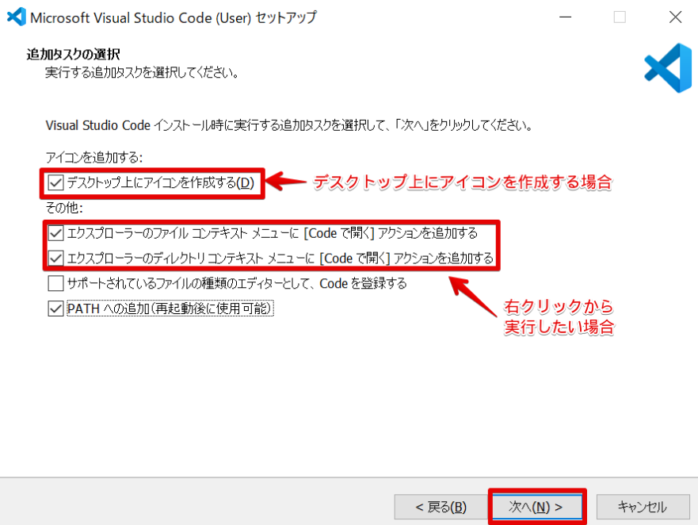設定が完了したら、「次へ」を押してください。
あとは、設定内容を確認し、「インストール」ボタンを押すだけです。
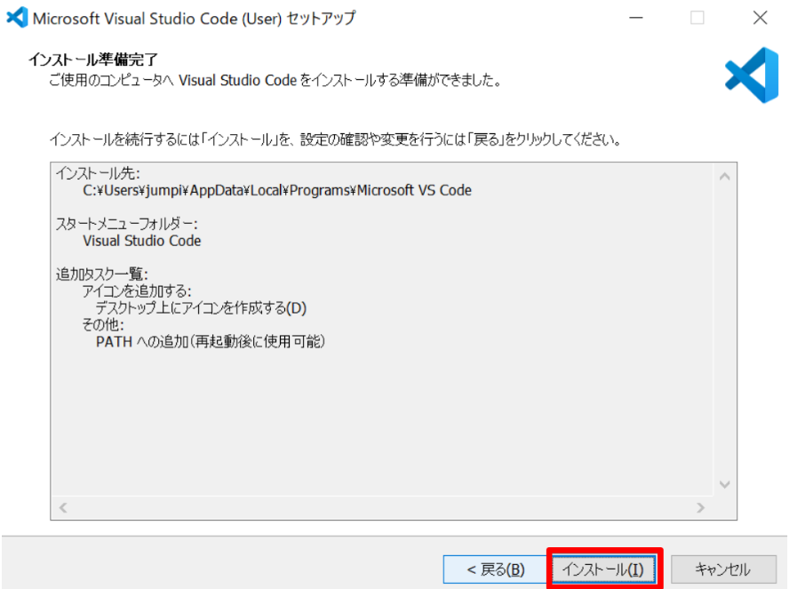インストールが始まるので、しばらくお待ちください。
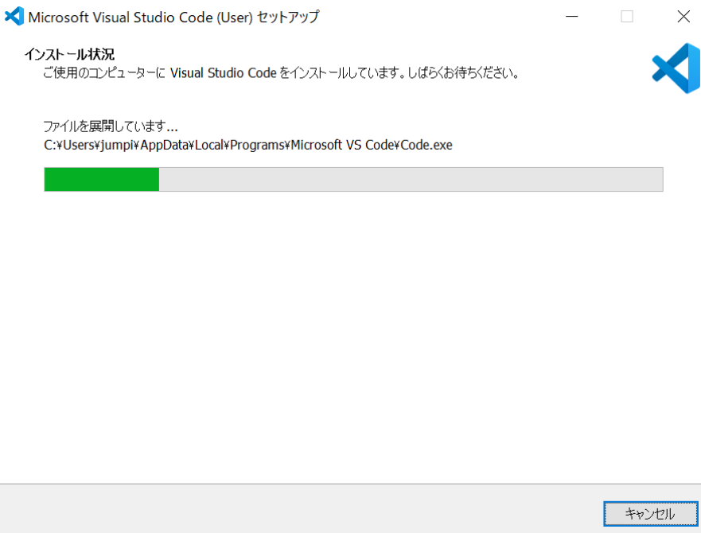下図のような画面が表示されれば、インストール完了です.
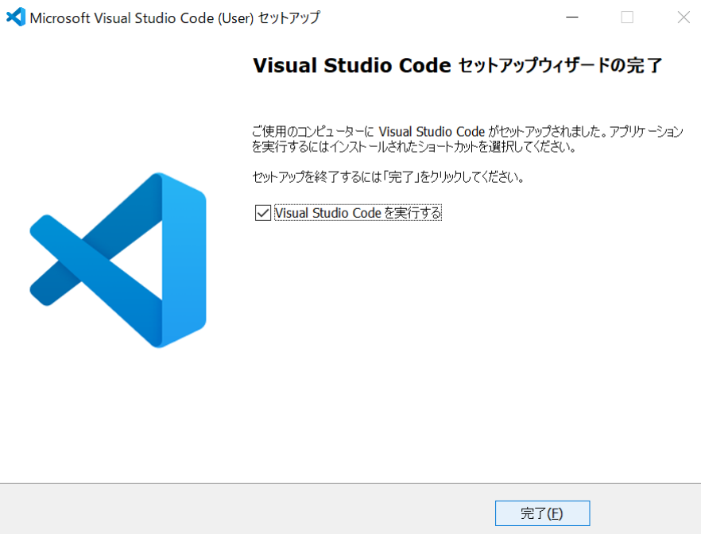4.Visual Studio Codeの起動
スタートメニューから「Visual Studio Code」を起動します。
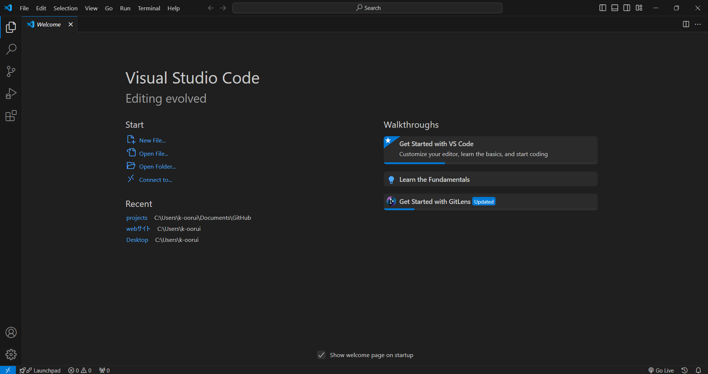画面左上の「File」メニューから、「New Text File」をクリックして新規エディタを作成します。
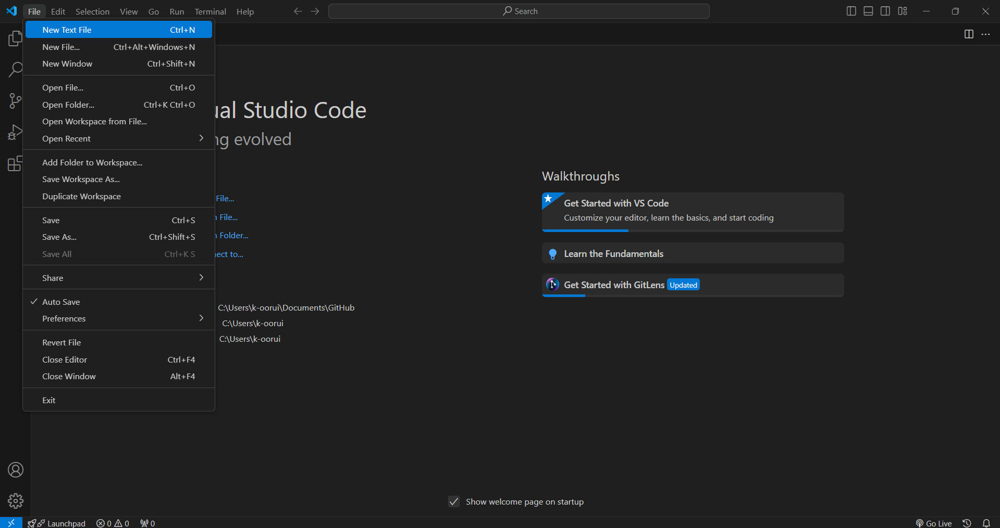以下の画面が表示され、キーボード入力が確認できたら起動完了です。
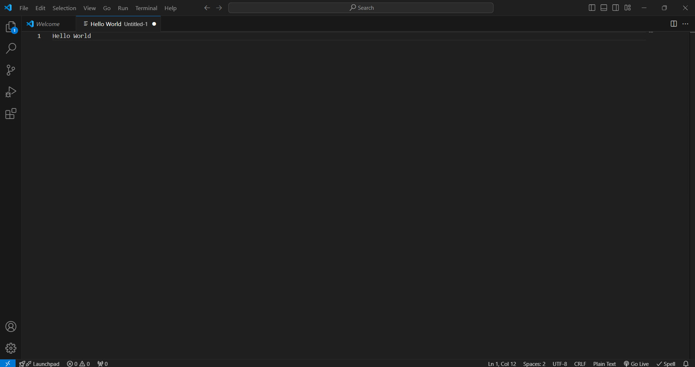Visual Studio Code (VSCode)を使う訳

1.軽量かつ高速
通常、vscodeほど多くの機能を持つエディタは動作が重くなり、使用感があまり良くありません。 しかし、vscodeはほとんど気にならないほど軽い動作を実現しています。
もしvscodeを使っていて「重いな」と感じたとしても、使用していない機能(のほとんど)を簡単に切ることができるので、この点でも使いやすいエディタであると言えます。
2.クロスプラットフォーム対応
VSCodeは以下の主要なプラットフォームで動作します。
・Windows: 一般的なインストーラー形式で提供されており、Windowsの標準的な手順でインストール可能。
・macOS: macOS用の.dmgファイルとして提供され、ドラッグアンドドロップで簡単にインストール可能。
・Linux: Debian/Ubuntu用の.debパッケージ、Red Hat/Fedora/SUSE用の.rpmパッケージが提供されており、コマンドラインからインストール可能。また、Snapパッケージも利用できます。
3.豊富な拡張機能
vscodeの強みはなんといっても、拡張機能の豊富さにあります。 また、そのインストール・アンインストールもとても簡単です。
vscodeには、拡張機能をインストールするためのプラグインがあらかじめ搭載されています。
これによって、複数のモジュールからなる拡張機能であっても、ひとつを選択すればまとめてインストールしてくれます。 vscodeの拡張機能はサイドバーから検索することができます。
以下に代表的な拡張機能を具体的に紹介します。
・Python: Microsoftが提供するPython拡張機能は、Pythonのコード補完（IntelliSense）、Linting、デバッグ、Jupyter Notebookのサポートなどを提供します。
・Live Server: Ritwick Deyが提供するこの拡張機能は、ローカルのWebサーバーを起動し、ファイルを保存すると自動的にブラウザをリロードします。HTML、CSS、JavaScriptの変更を即座に確認できます。
・Prettier: コードフォーマッタで、JavaScript、TypeScript、JSON、CSS、HTMLなど多くの言語に対応しています。コードを自動的に整形し、統一されたコーディングスタイルを維持します。
・ESLint: JavaScript/TypeScriptのLintingツールで、コードの品質と一貫性を向上させます。エラーや警告をリアルタイムで表示し、コードの問題を素早く修正できます。
4.インテリセンス（コード補完）
インテリセンスは、コードを書く際に次に何を書くべきかを予測し、提案を表示する機能です。以下のような機能があります。
・コード補完: 使用可能な変数、関数、メソッド、クラスなどを自動的に提案します。
・シグネチャヘルプ: 関数の引数リストや説明を表示します。
・コードスニペット: よく使うコードのテンプレートを提供し、素早くコードを記述できます。
5.統合ターミナル
vscodeには内蔵のターミナルがあり、エディタ内でコマンドライン操作ができます。以下の点が利便性を高めています。
・マルチターミナル: 複数のターミナルを開いて、作業ごとに切り替えが可能。
・カスタマイズ: ターミナルの外観やショートカットを自分好みに設定可能。
6.デバッグ機能
vscodeは高度なデバッグツールを提供し、以下の機能が利用できます
・ブレークポイント: コードの特定の行にブレークポイントを設定し、実行を一時停止して状態を確認できます。
・ステップ実行: ステップオーバー、ステップイン、ステップアウトなどの操作で、コードの実行を細かく追跡できます。
・変数ウォッチ: 特定の変数の値を監視し、変更をリアルタイムで確認できます。
・コールスタック: 現在のコールスタックを表示し、関数の呼び出し元を確認できます。
7.Gitとの統合
vscodeはGitとの統合機能を標準で提供し、以下の操作がGUIで簡単に行えます。
・コミット: 変更内容をステージングしてコミットメッセージを入力するだけで簡単にコミットできます。
・プッシュ/プル: リモートリポジトリとの同期が簡単に行えます。
・ブランチ管理: ブランチの作成、切り替え、マージなどの操作が簡単に行えます。
・差分表示: ファイルの変更履歴や、リモートリポジトリとの差分を視覚的に確認できます。
8.設定のカスタマイズ
vscodeは高いカスタマイズ性を持っており、以下の方法で設定が行えます。
・設定ファイル: settings.jsonファイルを使用して詳細な設定が可能です。ユーザー設定とワークスペース設定を分けて管理できます。
・キーバインド: キーボードショートカットを自分好みにカスタマイズできます。
・テーマ: 多くのテーマが用意されており、エディタの外観を自由に変更できます。
9.リモート開発
vscodeはリモート開発環境をサポートしており、以下の方法でリモート環境にアクセスできます。
・Remote - SSH: 男性、女性、その他
・Remote - Containers: Dockerコンテナを使用して隔離された開発環境を構築し、その中で開発が行えます。
・Remote - WSL: Windows Subsystem for Linuxを利用して、Windows上でLinuxの開発環境を実現します。
10.エコシステムとコミュニティ
vscodeはMicrosoftによって開発されており、強力なサポート体制と活発なコミュニティが存在します。以下のリソースが利用可能です。
・公式ドキュメント: 詳細なドキュメントが提供されており、使い方やトラブルシューティングの情報が豊富です。
・コミュニティフォーラム: Stack OverflowやGitHub Discussionsなどで活発な議論が行われており、問題解決や情報交換が行われています。
・オープンソース: vscodeはオープンソースプロジェクトであり、GitHub上でコードが公開されており、ユーザーが貢献することができます。